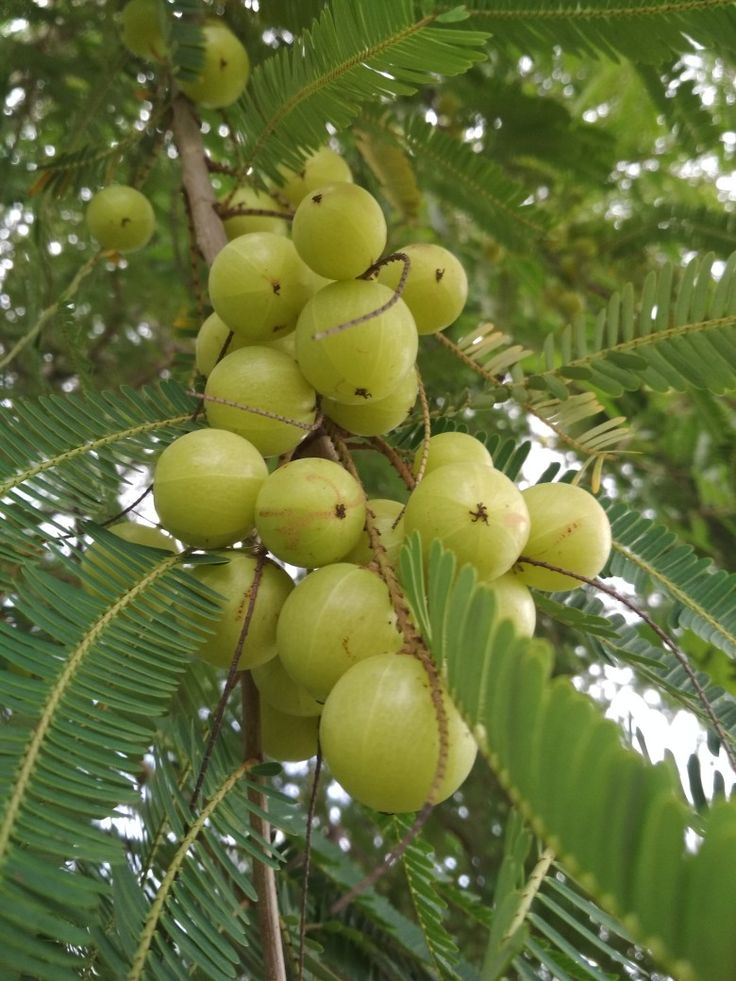
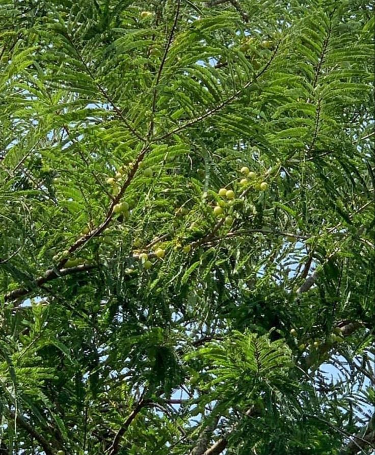
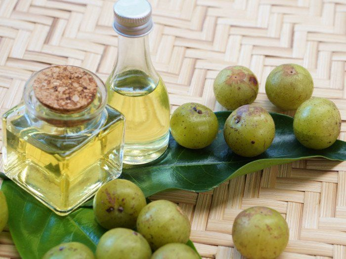
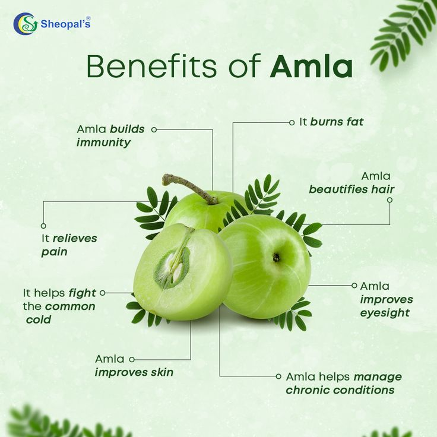
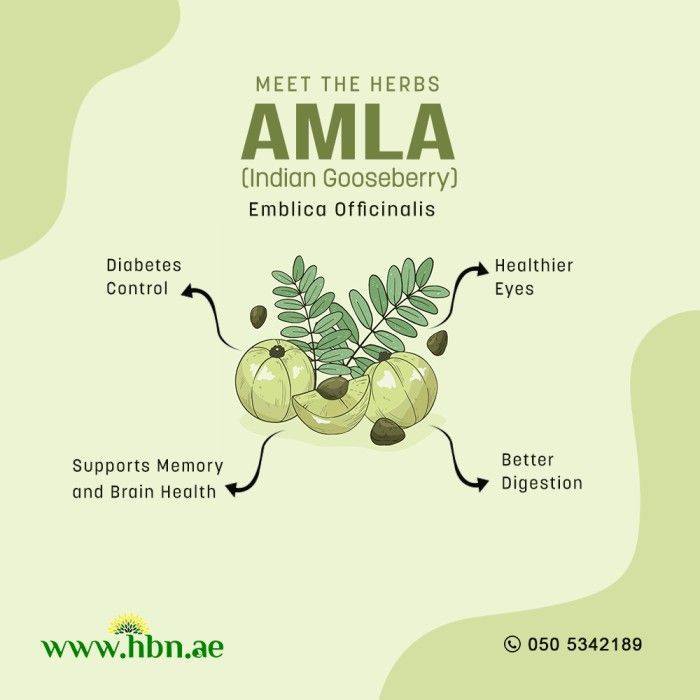
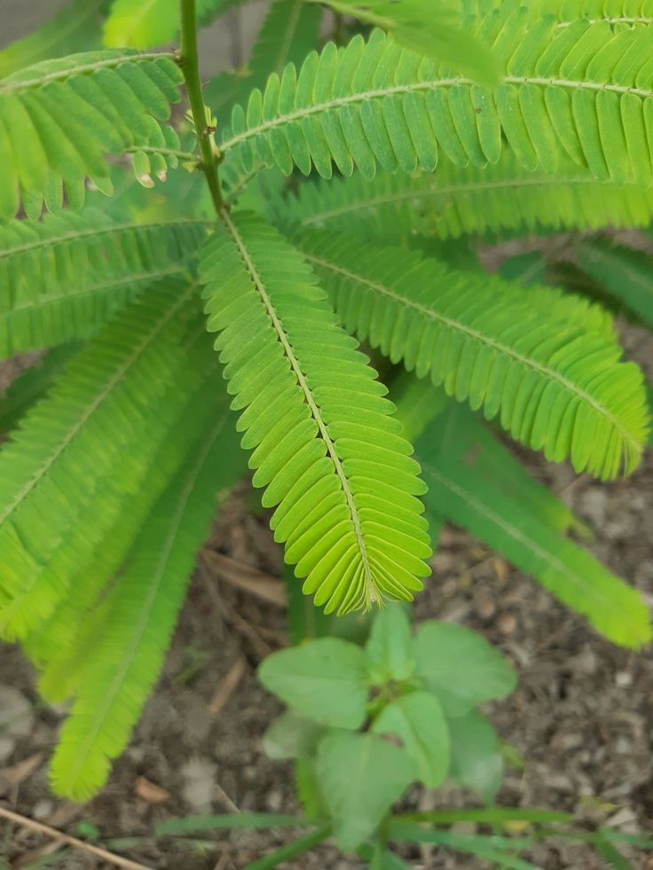

Amla (Indian Gooseberry)


General Information
Scientific Name: Phyllanthus emblica
Family: Phyllanthaceae
Type: Deciduous tree
Height: 8 to 18 meters (26 to 59 feet)
Uses of Amla:
- Medicinal: Amla is used extensively in Ayurveda to boost immunity, improve digestion, and manage diabetes.
- Food: Consumed fresh, pickled, or in juice, candy, and chutneys.
- Hair & Skin Care: Amla oil is used to strengthen hair and rejuvenate skin.
Medicinal & Biological Uses:
- Rich in Vitamin C and antioxidants.
- Anti-inflammatory, antimicrobial, and anti-aging properties.
- Used in treating cough, cold, anemia, ulcers, and high cholesterol.
- Note: Safe in moderate quantities, consult professionals for therapeutic use.



Description
Amla is a medium-sized deciduous tree native to India. Its branches are drooping, and its bark is light grey. The tree produces small, greenish-yellow spherical fruits with a sour and astringent taste, highly valued in traditional medicine.
Habitat & Growth
- Native Regions: Indian subcontinent, Southeast Asia
- Soil: Prefers well-drained loamy soils but adapts to rocky and saline soils

- Sun: Full sunlight is essential for optimal growth
- Watering: Moderate watering; drought-resistant once mature
Propagation
Amla is propagated using seeds and vegetative methods like budding or grafting. Budding ensures true-to-type plants, commonly used in commercial cultivation.
Fun Facts & Cultural Significance
- Amla is considered sacred in Hindu tradition and is linked to Lord Vishnu.
- The tree is worshipped during the Amla Navami festival in many Indian regions.
- It is one of the three ingredients in the traditional Ayurvedic formula "Triphala."
- Revered for promoting longevity and vitality in ancient Indian texts.